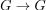
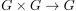
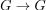
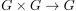
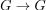
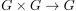

topologische Gruppe
1. Definition
Eine Gruppe  und eine Topologie
und eine Topologie  über ist eine topologische Gruppe, falls die Abbildung auf das Inverses Element  und die Gruppenverknüpfung  über der induzierten Produkttopologie stetig ist
über ist eine topologische Gruppe, falls die Abbildung auf das Inverses Element  und die Gruppenverknüpfung  über der induzierten Produkttopologie stetig ist
Eine Gruppe und eine Topologie über ist eine topologische Gruppe, falls die Abbildung auf das Inverses Element  und die Gruppenverknüpfung  über der induzierten Produkttopologie stetig ist